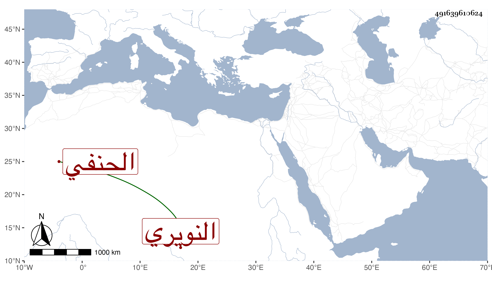

0902Sakhawi.DawLamic.ITO20230111-ara1.EIS1600.491639610624
Biography ID: 491639610624
555
محمد بن محمد بن محمد بن عبد الرحيم بن إبراهيم البدر أبو الفضل بن التقي أبي الخير بن الشمس الحنفي سبط الشمس محمد بن عبد الله بن حسين النويري أحد قراء السبع من الشافعية ، ولذا اشتهر هذا بالنويري . ولد في سنة خمس وثلاثين ونشأ فحفظ القرآن والقدوري وأخذ عن الأمين الأقصرائي وغيره كابن الديري ولازم البدر بن عبيد الله وصاهره على ابنة أخيه ، وناب في القضاء عن الديري فمن بعده واختص بالتاج بن المقسي كثيرا وأكثر من مخالطته بل وعمل النقابة لابن الشحنة وقتا وصارت له نوبة في باب الحنفي ، وحج غير مرة وجاور وولي التدريس بمدرسة الجاي تجاه أم السلطان من التبانة وسكنها والإعادة بأم السلطان إلى غير ذلك من الجهات وانجمع بعد موت عشرائه مع علي الهمة وحسن العشرة والفتوة وخفة الروح ثم كثرت مخالطته للبدري أبي البقاء بن الجيعان لتزويجه سرية له .
